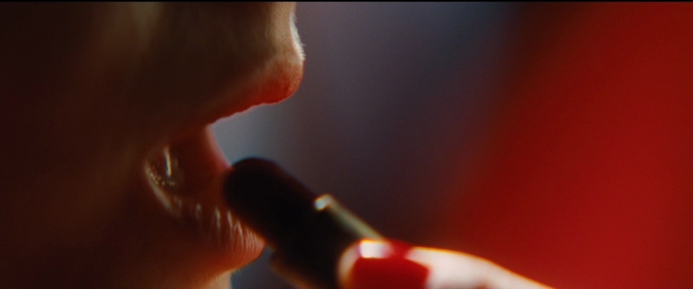

An extreme close-up is the most you can fill a frame with your subject. It often shows eyes, mouths and gun triggers. In extreme close-up shots, smaller objects get great detail and are the focal point.
Use an ECU to emphasize a specific feature of your subject:
Visionary filmmaker Darren Aronofsky uses various degrees of close-ups in his work, like in one of Aronofsky's best films Black Swan. In this extreme close-up, we see that her transformation happens quite literally. Aronofsky uses the extreme close up shot size to show feathers growing in Nina’s back.
Extreme close-ups can be used in many different film genres, which includes comedy as well.
https://www.studiobinder.com/blog/ultimate-guide-to-camera-shots/